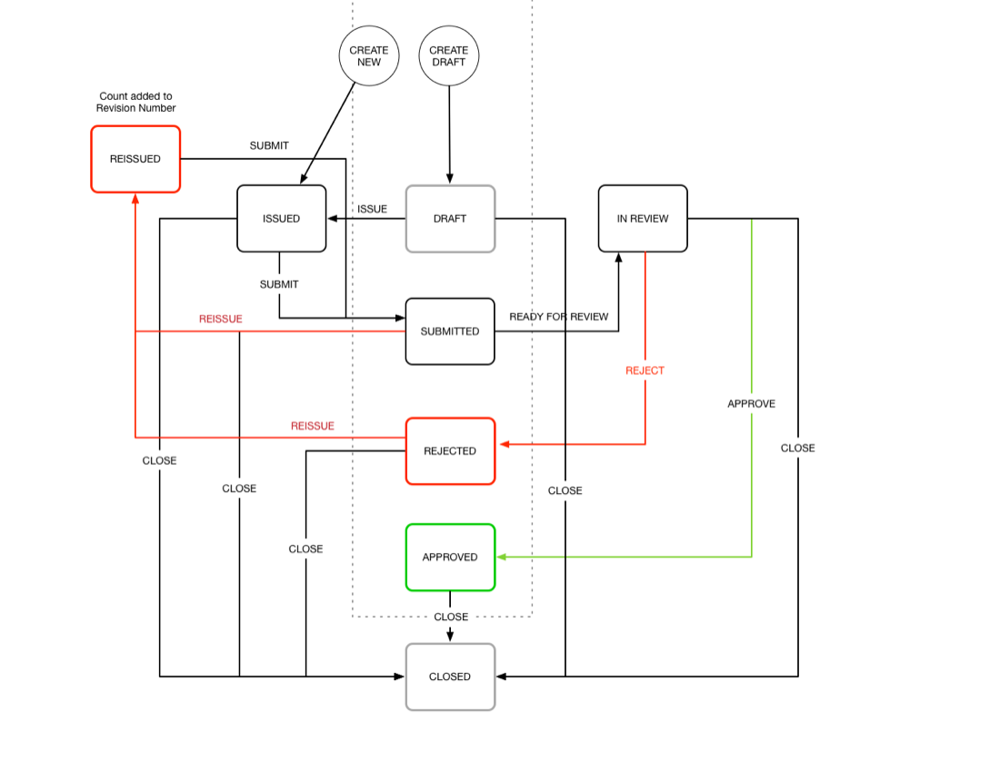

All work
Viewpoint · 2018
Viewpoint Online — Submittals UX
Digitizing the construction submittal process — a document-heavy, multi-party approval chain where a lost revision costs real money.
Client
Viewpoint
Year
2018
Role
Senior UX Designer
Focus
Enterprise · Product UX

About this project
Digitizing the construction submittal process — a document-heavy, multi-party approval chain where a lost revision costs real money.
What I did
- Role. Senior UX Designer at Viewpoint, 2018.
- Focus. Enterprise · Product UX.
- Scope. Research through shipped design — discovery, information architecture, interaction design, and hand-off to engineering.